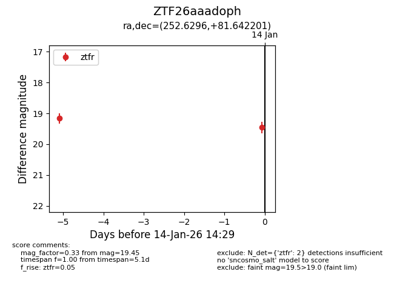
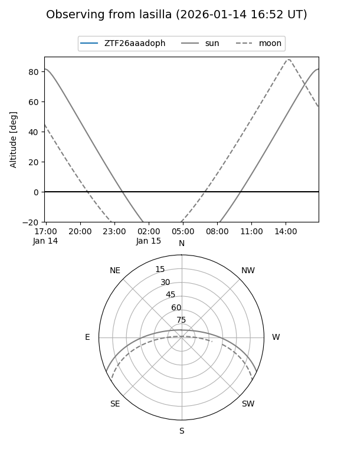
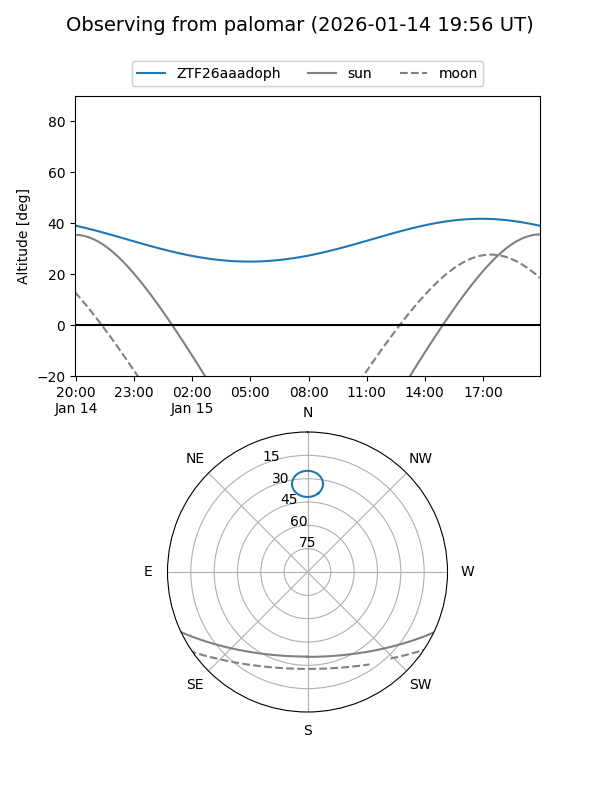

ZTF26aaadoph
Target ZTF26aaadoph at 2026-01-14 14:30
Aliases and brokers:
FINK: link
Lasair: link
ALeRCE: link
alt names
ZTF26aaadoph (ztf,fink_ztf)
Coordinates:
equatorial (ra, dec) = 252.6296,+81.64220
equatorial (HMS+DMS) = 16:50:31.11,+81:38:31.92
galactic (l, b) = (114.4995,+31.08251)
Flags:
Photometry:
last ztfr=19.45
2 ztfr detections
Lightcurve

Visibility


Additional plots